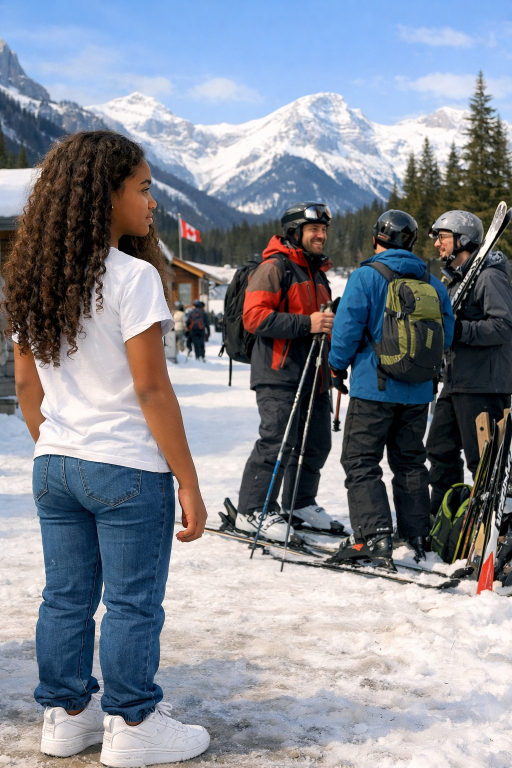
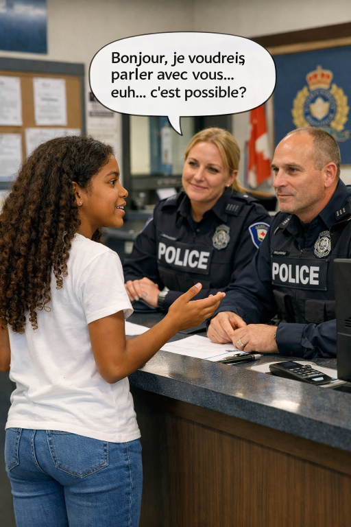

| Brooklyn hadn’t meant to overhear anything—she was just cutting across the driveway when she spotted her uncle standing beside a truck dusted with fresh mountain snow. Two men in thick ski jackets clustered around him, their breath fogging in the cold air as they talked in low, urgent tones. One of them pointed toward a folded trail map, the kind skiers use before heading into the steep terrain around Banff. Something about the way her uncle kept shifting his weight, glancing around as if checking for witnesses, made Brooklyn pause mid‑step. She ducked behind a stack of firewood, heart thudding, suddenly aware she was seeing something she wasn’t meant to. |  |
| From her hiding place, she watched the men nod, their faces set with the kind of seriousness that didn’t match a casual ski trip. Words drifted toward her—“conditions,” “timing,” “risk”—each one sharpening her unease. Her uncle’s jaw was tight, his hands shoved deep into his pockets as though he were bracing himself against more than the cold. When the men finally climbed into their truck and drove off toward the towering peaks, Brooklyn felt a chill that had nothing to do with winter. Whatever they were planning in Banff, it wasn’t just skiing—and now she couldn’t shake the feeling that her uncle was tangled in something far more dangerous than fresh powder and mountain slopes. |
 go to police |